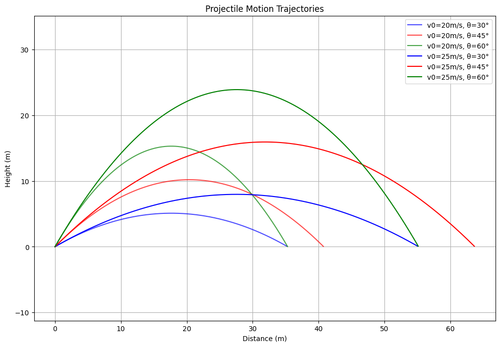

Problem 1
Investigating the Range as a Function of the Angle of Projection
1. Theoretical Background
Theoretical Foundation of Projectile Motion
1. Introduction
Projectile motion is a fundamental topic in classical mechanics that describes the motion of an object under the influence of gravity. This motion can be analyzed by breaking it into two independent components: horizontal motion (constant velocity) and vertical motion (uniformly accelerated motion). The governing equations of motion can be derived using Newton’s laws.
2. Derivation of Governing Equations
To analyze projectile motion, we consider an object launched with an initial velocity \(v_0\) at an angle of projection \(\theta\) from the horizontal. The motion is influenced by gravitational acceleration \(g\), assuming air resistance is negligible.
2.1 Equations of Motion
Using kinematic equations, we resolve the motion into horizontal and vertical components:
- Horizontal displacement \(x(t)\):
\(\(x=v_0\cos\theta\cdot t\)\)
- Vertical displacement \(y(t)\):
\(\(y=v_0\sin\theta\cdot t-\frac{1}{2}gt^2\)\)
- Horizontal velocity \(v_x(t)\):
\(\(v_x=v_0\cos\theta\)\)
(Since there is no acceleration in the horizontal direction, the velocity remains constant.)
- Vertical velocity \(v_y(t)\):
\(\(v_y=v_0\sin\theta-gt\)\)
- Time of flight (when the projectile returns to the initial height \(y=0\)):
\(\(t_f=\frac{2v_0\sin\theta}{g}\)\)
- Maximum height (when vertical velocity becomes zero, \(v_y=0\)):
\(\(H=\frac{(v_0\sin\theta)^2}{2g}\)\)
- Horizontal range (total horizontal distance traveled):
\(\(R=\frac{v_0^2\sin(2\theta)}{g}\)\)
3. Effect of Initial Conditions
3.1 Influence of Launch Angle \(\theta\)
- The horizontal range is maximized when \(\theta=45^\circ\), as \(\sin(2\theta)\) reaches its maximum at this angle.
- At lower angles, the projectile travels farther horizontally but remains in the air for a shorter duration.
- At higher angles, the projectile reaches greater heights but covers less horizontal distance.
3.2 Influence of Initial Velocity \(v_0\)
- A greater initial velocity increases both the range and the maximum height.
- The relationship between range and initial velocity is quadratic: \(R\propto v_0^2\).
3.3 Influence of Gravitational Acceleration \(g\)
- Higher values of \(g\) (such as on planets with stronger gravity) reduce both the maximum height and horizontal range.
- The time of flight is inversely proportional to \(g\), meaning weaker gravity results in longer projectile motion.
4. Conclusion
The theoretical foundation of projectile motion is based on Newtonian mechanics and kinematic equations. The motion is characterized by: - Independent horizontal and vertical components. - A parabolic trajectory due to constant gravitational acceleration. - A well-defined maximum range at 45° launch angle.
In the next sections, we will analyze how these theoretical principles apply in practical scenarios and computational simulations.
Phython Implimentation
import numpy as np
import matplotlib.pyplot as plt
class ProjectileMotion:
def __init__(self, g=9.81):
"""Initialize with gravitational acceleration (m/s²)"""
self.g = g
def calculate_trajectory(self, v0, angle_deg, t_step=0.01):
"""
Calculate projectile trajectory
Parameters:
v0: initial velocity (m/s)
angle_deg: launch angle in degrees
t_step: time step for calculations
Returns:
x, y: arrays of x and y coordinates
"""
# Convert angle to radians
angle_rad = np.radians(angle_deg)
# Initial velocity components
vx = v0 * np.cos(angle_rad)
vy = v0 * np.sin(angle_rad)
# Time of flight
t_flight = 2 * vy / self.g
# Generate time points
t = np.arange(0, t_flight + t_step, t_step)
# Calculate positions
x = vx * t
y = vy * t - 0.5 * self.g * t**2
# Filter out negative y values (after hitting ground)
valid_indices = y >= 0
return x[valid_indices], y[valid_indices]
def get_range(self, v0, angle_deg):
"""Calculate maximum range for given velocity and angle"""
angle_rad = np.radians(angle_deg)
return (v0**2 * np.sin(2 * angle_rad)) / self.g
def plot_trajectory_comparison():
"""Plot trajectories for different angles and velocities"""
projectile = ProjectileMotion()
# Parameters to compare
velocities = [20, 25] # m/s
angles = [30, 45, 60] # degrees
colors = ['blue', 'red', 'green']
plt.figure(figsize=(12, 8))
# Plot trajectories
for v0 in velocities:
for angle, color in zip(angles, colors):
x, y = projectile.calculate_trajectory(v0, angle)
plt.plot(x, y, label=f'v0={v0}m/s, θ={angle}°', color=color, alpha=0.7 if v0 == 20 else 1)
plt.title('Projectile Motion Trajectories')
plt.xlabel('Distance (m)')
plt.ylabel('Height (m)')
plt.grid(True)
plt.legend()
plt.axis('equal')
plt.show()
def plot_range_vs_angle():
"""Plot range vs launch angle"""
projectile = ProjectileMotion()
v0 = 20 # constant velocity of 20 m/s
# Generate angles from 0 to 90 degrees
angles = np.arange(0, 91, 1)
ranges = [projectile.get_range(v0, angle) for angle in angles]
plt.figure(figsize=(10, 6))
plt.plot(angles, ranges, 'b-')
plt.title(f'Range vs Launch Angle (v0 = {v0} m/s)')
plt.xlabel('Launch Angle (degrees)')
plt.ylabel('Range (m)')
plt.grid(True)
# Mark maximum range (should be at 45°)
max_range = max(ranges)
max_angle = angles[ranges.index(max_range)]
plt.plot(max_angle, max_range, 'ro', label=f'Max range = {max_range:.1f}m at {max_angle}°')
plt.legend()
plt.show()
def main():
"""Main function to run simulations"""
projectile = ProjectileMotion()
# Example scenario
v0 = 20 # m/s
angle = 45 # degrees
# Calculate and print single trajectory info
x, y = projectile.calculate_trajectory(v0, angle)
max_range = projectile.get_range(v0, angle)
print(f"Initial velocity: {v0} m/s")
print(f"Launch angle: {angle}°")
print(f"Maximum range: {max_range:.2f} m")
print(f"Maximum height: {max(y):.2f} m")
# Generate comparison plots
plot_trajectory_comparison()
plot_range_vs_angle()
if __name__ == "__main__":
main()
Plot
